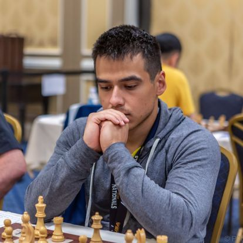
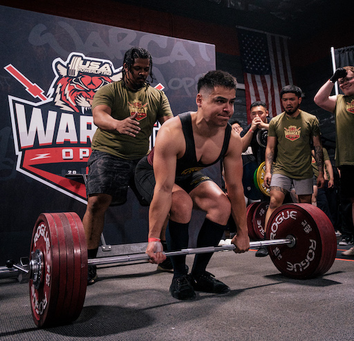
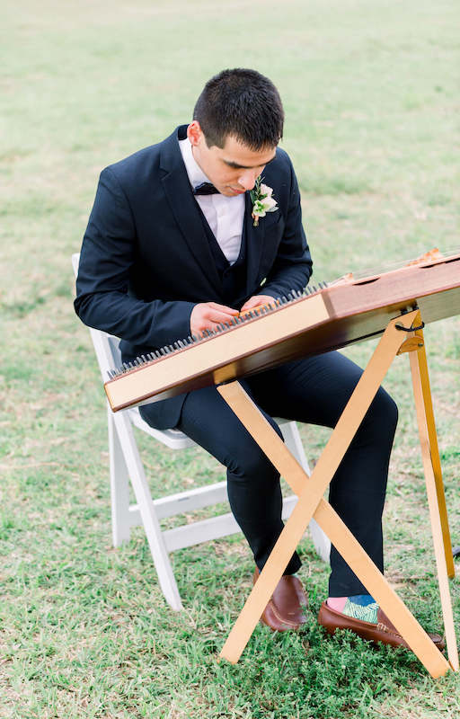
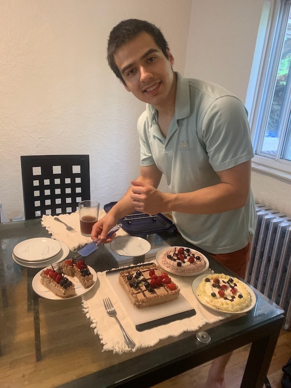

Outside of computer science I have the chance to participate in many activitites. I am thankful for the lessons I've learned, the memorable experiences I've had, and the gracious and talented people I have come to know through each of them.
Chess

I am an grandmaster, the highest title awarded in chess. Some competitive highlights can be found on my Wikipedia page.
Selected News Coverage (newest first):
A podcast episode on the Perpetual Chess podcast covering my journey in chess and road to the grandmaster title as an adult with a job outside of chess.
Live-streamed commentary of my final game of the 2024 U.S. Masters, playing on the top board against the second highest-rated player in the world at the time, Fabiano Caruana. I lost the game but it was a thrilling match with entertaining commentary (partly on my outfit).
An interview by the Saint Louis Chess Club after the game that secured me the grandmaster title, featuring an excited me rattling off chess analysis and discussion of my other life pursuits.
US Chess News coverage of the 2020 States Chess Cup playoffs, including my annotations of two games I played (one was another upset loss in the finals :) although the other allowed us to advance in the playoffs)
My college team's National Division II Championship victory in the 2012 Pan-American Intercollegiate Championship, where I played first board. Two years later, Florida State University's first board scored a large individual upset over me in the first round of Pan Ams and wrote an article for US Chess about it...you can't win 'em all :) congratulations to him on a well-deserved victory.
I am also an occasional chess writer, having published in the United States Chess Federation's Chess Life magazine.
An article I wrote about achieving my first norm toward the international master title as a non-career chess player. Nominated for "Best Personal Narrative" award by Chess Journalists of America.
Coverage of the 2024 National Open, describing the intense roller coaster that was the fight for grandmaster title norms in one of the biggest open tournaments on the American chess circuit.
Coverage of the 2024 U.S. Masters, where I achieved one of the title results that made me a grandmaster.
From time to time, I also work with students, give talks, or play exhibition matches.
Powerlifting

In graduate school, I took up lifting weights as a nice contrast to the abstract and cerebral nature of research. This eventually led me to the sport of powerlifting.
I have qualified for the USA Powerlifting open division national championships multiple years (in 2022, I competed in it simultaneously with the historic National Open chess tournament, coincidentally held down the hall!), and as of 2023 my competitive results rank in the top 2% of raw, drug-tested male powerlifters worldwide according to the Open Powerlifting project. In 2025, I finished third at the California state championship by the bodyweight-adjusted strength formula used to rank powerlifters.
I also am a national referee and have refereed multiple state and national powerlifting championships.
Creative Interests


I also play a fair amount of music. I own and play a variety of instruments, of which one of my favorites is the hammered dulcimer. I've played it in a couple of weddings and other assorted events, and you can hear a bit of it in an EP some of my talented college friends put together. At last count I've performed or recorded on five musical instruments.
I enjoy cooking and baking, mainly because I prefer hobbies to chores and when I reached adulthood I realized that feeding myself would have to become one of those two things.